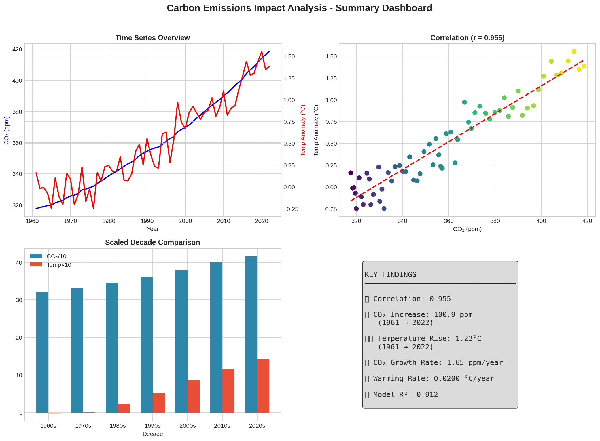

A statistical analysis of the relationship between global CO₂ concentrations and temperature anomalies from 1961 to 2022. Uncovering the numbers behind the crisis.
Correlation
Near-perfect positive correlation between CO₂ and temperature rise.
R-Squared
CO₂ concentrations explain 91.2% of temperature variance.
CO₂ Growth
Global atmospheric CO₂ has increased by 100.88 ppm since 1961.
Warming
The average global temperature anomaly recorded since 1961.
This analysis spans over six decades of historical data, merging global atmospheric measurements with country-level temperature deviations. By applying Linear Regression and K-Means Clustering, the study provides definitive evidence of the link between industrial output and climate response.
Beyond simple observation, we modeled predictive scenarios. The data suggests that for every unit of carbon we remove from the atmosphere, the cooling effect is disproportionately beneficial, offering a data-backed case for immediate emissions policy.
Monthly CO₂ concentrations (1958-2024) & Country-level temperature anomalies (1961-2022).

Based on our Linear Regression model, we can project the cooling effect of global CO₂ reduction efforts.
By lowering global CO₂ concentrations by just 10%, the statistical model predicts a drop in temperature anomaly to:
Achievable target
An aggressive 20% reduction strategy would stabilize the atmosphere, bringing the temperature anomaly down to:
Pre-Industrial stability
Interactive data processing from source CSV files
Time Series (1961 - 2022)
Scatter Analysis (PPM to Δ°F)
Data was cleaned and merged on a year-month basis. Monthly fluctuations were smoothed using annual averaging to reveal long-term climate trends and anomalies.
Pearson Correlation was used to quantify the linear relationship, while Linear Regression provided the coefficients for scenario forecasting.